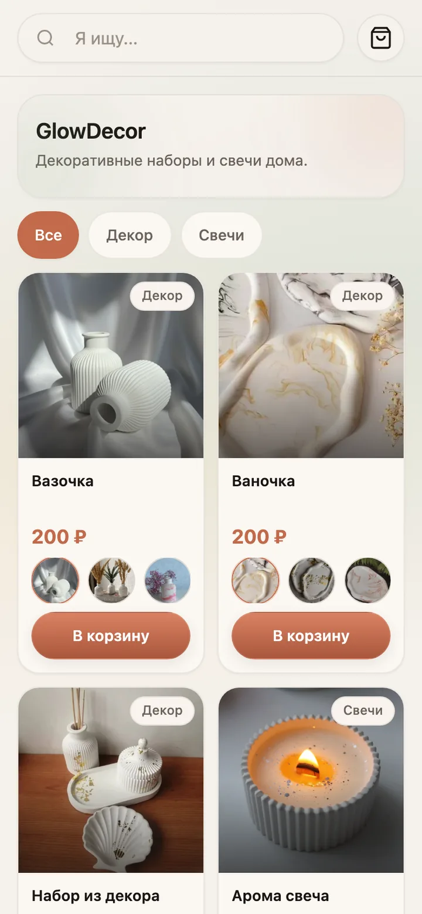
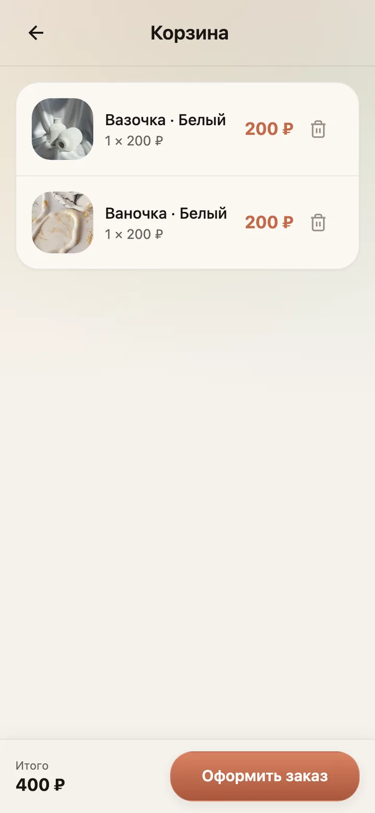
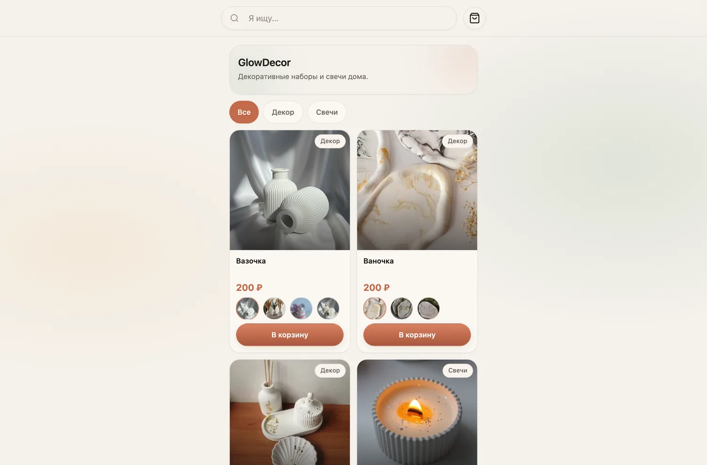
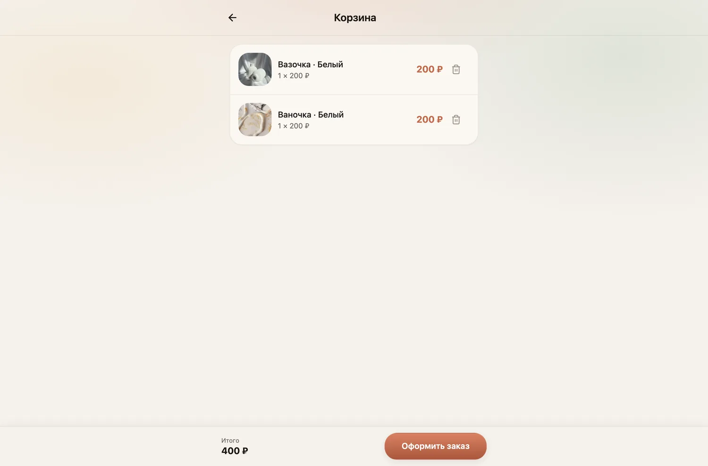

Telegram-магазин · mini app в проде · клиент
GlowDecor — декор и свечи
Каталог, категории и корзина прямо в Telegram. Поддержка с анонимной переадресацией: клиент пишет боту — сообщение уходит владельцу, личный контакт скрыт.
Открыть бота ↗
десктоп + мобайл